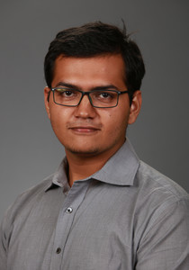

J.D. Candidate, Class of 2020 University of California, Davis School of Law Davis, CA
Dishan is a Juris Doctor Graduate from University of California, Davis School of Law. A Dean's Merit Scholar, Dishan was on the Moot Court Honors Board, co-chairing the UC Davis Asylum & Refugee Law National Moot Court Competition. Furthermore, Dishan was also a board member of the King Hall International Law Association and King Hall Intellectual Property Law. Before Law school, Dishan completed his bachelor's in mechanical engineering from the National Institute of Technology Karnataka, India. He, therefore, intends to use his technical background to zealously advocate in his legal career. Currently, Dishan has returned back to Mumbai, India. He intends to start his career in M&A and Corporate Transactions. He is therefore, looking for suitable opportunities in Mumbai.
Currently, Dishan is seeking opportunity in commercial/technical transactions starting Summer 2020.
drao@ucdavis.edu Linkedin Page